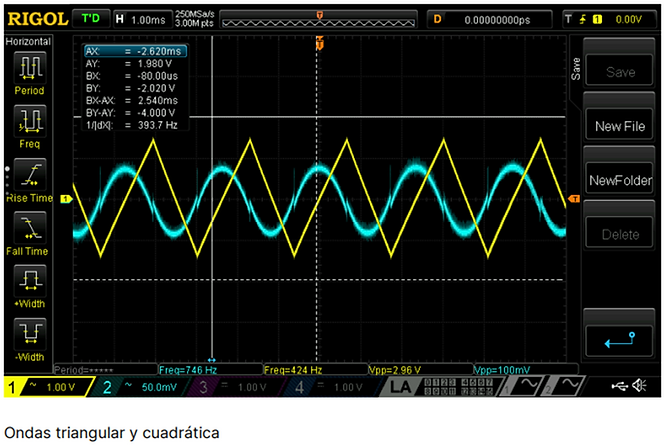

Lluvia de aplicaciones del amplificador operacional
Para este proyecto, se planteó hacer un análisis más intensivo de las aplicaciones de un amplificador operacional, de ahí su nombre "lluvia de aplicaciones", donde se requiere analizar y fabricar en PCB universal cinco circuitos de aplicación usando amplificadores operacionales. La cantidad de circuitos coincide con la cantidad de integrantes del grupo de trabajo, cada uno de los cuales tuvo que elegir una aplicación para desarrollar, analizar, implementar y medir en el laboratorio.
Simuñador de inductancia
Este circuito utiliza un amplificador operacional junto con componentes pasivos como resistencias y capacitores para simular el comportamiento de un inductor. Es una solución práctica cuando se requieren inductores en espacios reducidos o en entornos donde los inductores físicos podrían generar interferencia electromagnética. Se utiliza principalmente en filtros activos y circuitos de resonancia, y es adaptable a diferentes valores de inductancia al ajustar los componentes.
Este circuito fue previamente probado utilizando una breadboard para comprobar su funcionamiento. Además, se realizó la simulación del circuito con el fin de verificar el fenómeno inductivo que se esperaba en la señal, específicamente el desfase en la salida.
Circuito simulador de inductancia en placa universal
Simulacion:
Mediciones:
Generador de Señales Arbitrarias
Diseñado para generar formas de onda ajustables, como sinusoidales, triangulares o cuadradas, este circuito emplea osciladores basados en amplificadores operacionales. Es ideal para laboratorios y pruebas de sistemas electrónicos, ya que permite ajustar parámetros como amplitud y frecuencia para simular diferentes condiciones operativas. Su versatilidad lo convierte en una herramienta indispensable en el desarrollo y validación de equipos electrónicos.
Se requiere comprobar que a la salida genere una onda cuadrada, una triangular y una cuadrática.
Circuito de generador de señales arbitrarias en placa universal
Simulacion:
Mediciones:
Convertidor Frecuencia-Voltaje (F/V)
El circuito convierte una frecuencia de señal de entrada en un voltaje proporcional a través de un diseño que incluye un detector de picos, filtros activos y circuitos de promediado. Este convertidor es importante en sistemas de medición y control industrial, como sensores de velocidad y procesadores automáticos. Garantiza un desempeño estable y lineal al adaptarse a variaciones de frecuencia, siendo una solución confiable para aplicaciones dinámicas.
Sin embargo, hubo varios problemas relacionados con este diseño. Inicialmente, se empleaba un circuito con un transformador, pero debido a un problema con la tierra física, este no funcionó. Como resultado, se optó por cambiar el diseño, aunque las mediciones realizadas no pudieron ser documentadas.
Circuito de convertidor F/V en placa universal
Simulacion:
Convertidor Digital a Analógico (DAC) 6 bits
El circuito transforma datos digitales en señales analógicas continuas utilizando una red resistiva R-2R y un amplificador operacional sumador. Este diseño es crucial para la comunicación entre microcontroladores y sistemas analógicos, y se aplica en controles de motores, procesamiento de audio y generación de señales analógicas. Su diseño permite escalabilidad y precisión, lo que lo hace adecuado para sistemas embebidos y proyectos que requieren alta resolución.
En el primer diseño se utilizó un DIP Switch, pero estos presentaron fallas, por lo que se optó por rediseñarlo para usarlo con un Arduino. La salida debería haber sido un cambio en niveles DC. Sin embargo, debido a la falta de tiempo, no se logró realizar simulaciones ni documentar mediciones. A pesar de ello, el circuito funcionó correctamente en el laboratorio.
Circuito de convertidor DAC 6 bits en placa universal
Ecualizador de Señales
Este circuito ajusta la amplitud de señales en rangos de frecuencia específicos mediante filtros activos diseñados con amplificadores operacionales. Es ampliamente utilizado en la ingeniería de audio para resaltar o atenuar frecuencias según las necesidades del usuario, y también se aplica en telecomunicaciones para filtrar ruidos o mejorar la claridad de las señales. Su configuración flexible permite personalizar el comportamiento del circuito según el entorno de uso.